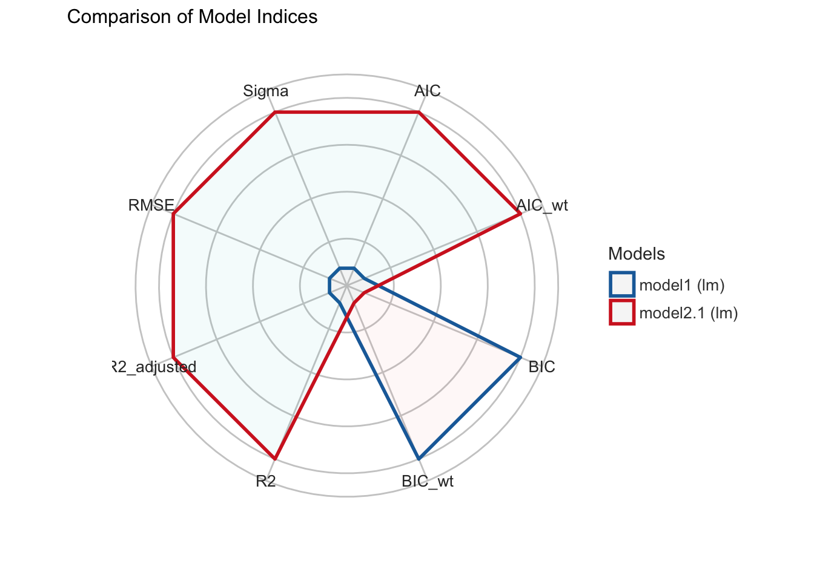

5 Multivariate Datenanalyse
5.1 Korrelationsmatrix
Wtd.cor()
library(weights)
library(corrplot)Syntax:
# Ohne Pipe
wtd.cor(datensatz[c("Variable1", "variable2", "variable3")], weight = datensatz$gewicht)
# Mit Pipe
# Nicht gut zu handhaben!Beispielcode:
# Datensatz erstellen
ds <- allbus2018 %>%
select(im19:im21, id01, wghtpew)
#Berechnung der Korrelationsmatrix
corMatrix <- wtd.cor(ds[1:4], weight = ds$wghtpew)
corMatrix
#> $correlation
#> im19 im20 im21 id01
#> im19 1.00000000 0.51469202 0.3452849 0.03606102
#> im20 0.51469202 1.00000000 0.5031235 -0.02409378
#> im21 0.34528492 0.50312350 1.0000000 -0.16428931
#> id01 0.03606102 -0.02409378 -0.1642893 1.00000000
#>
#> $std.err
#> im19 im20 im21 id01
#> im19 7.895494e-17 1.492272e-02 1.624389e-02 1.737802e-02
#> im20 1.492272e-02 1.144824e-15 1.495593e-02 1.739744e-02
#> im21 1.624389e-02 1.495593e-02 9.207409e-16 1.702737e-02
#> id01 1.737802e-02 1.739744e-02 1.702737e-02 4.070850e-17
#>
#> $t.value
#> im19 im20 im21 id01
#> im19 1.266545e+16 3.449049e+01 2.125629e+01 2.075094e+00
#> im20 3.449049e+01 8.734970e+14 3.364041e+01 -1.384903e+00
#> im21 2.125629e+01 3.364041e+01 1.086082e+15 -9.648546e+00
#> id01 2.075094e+00 -1.384903e+00 -9.648546e+00 2.456490e+16
#>
#> $p.value
#> im19 im20 im21 id01
#> im19 0.000000e+00 6.726140e-223 3.831939e-94 3.805500e-02
#> im20 6.726140e-223 0.000000e+00 6.568035e-214 1.661756e-01
#> im21 3.831939e-94 6.568035e-214 0.000000e+00 9.526801e-22
#> id01 3.805500e-02 1.661756e-01 9.526801e-22 0.000000e+00
# Grafik
# Achtung! Die Funktionen corrplot() und corrplot.mixed laufen noch nicht 100% stabil
corrplot(corMatrix$correlation, p.mat = corMatrix$p.value, method = "circle",
tl.col = "black", addCoef.col = "black", cl.cex = .7, number.cex = .7,
insig = "pch")5.2 Explorative Faktoranalyse und Hauptkomponentenanalyse
| Packet | Funktion | Verwendung |
|---|---|---|
| psych | KMO() | Kaiser-Meyer-Olkin-Kriterium (MSA) |
| psych | bartlett.test() | Bartlett-Test |
| psych | scree() | Scree-Test |
| psych | principal() | Hauptkomponentenanalyse |
| psych | fa() | Faktoranalyse |
| psych | fa_diagram() | Grafik |
library(psych)KMO()
Achtung! Ungewichtete Analyse.
Syntax:
# Ohne Pipe
KMO(datensatz[c("Variable1", "variable2", "variable3")])
# Mit Pipe
datensatz %>%
select(variable1, variable2, variable3) %>%
KMO()
Beispielcode:
# KMO/MSA
allbus2018 %>%
select(im19:im21, id01) %>%
KMO()
#> Kaiser-Meyer-Olkin factor adequacy
#> Call: KMO(r = .)
#> Overall MSA = 0.63
#> MSA for each item =
#> im19 im20 im21 id01
#> 0.66 0.61 0.66 0.45Bartlett.test()
Achtung! Ungewichtete Analyse.
Syntax:
# Ohne Pipe
bartlett.test(datensatz[c("Variable1", "variable2", "variable3")])
# Mit Pipe
datensatz %>%
select(variable1, variable2, variable3) %>%
bartlett.test()
Beispielcode:
# Bartlett-Test
allbus2018 %>%
select(im19:im21, id01) %>%
bartlett.test()
#>
#> Bartlett test of homogeneity of variances
#>
#> data: .
#> Bartlett's K-squared = 299.4, df = 3, p-value < 2.2e-16Scree()
Achtung! Ungewichtete Analyse.
Syntax:
# Ohne Pipe
scree(datensatz[c("Variable1", "variable2", "variable3")])
# Mit Pipe
datensatz %>%
select(variable1, variable2, variable3) %>%
scree()
Beispielcode:
# Scree-Plot
allbus2018 %>%
select(im19:im21, id01) %>%
scree() Principal()
Syntax:
# Ohne Pipe
principal(datensatz[c("Variable1", "variable2", "variable3")],
weight = datensatz$gewicht, nfactors = 1, rotate = "varimax",
use = "pairwise", scores = T)
# Mit Pipe
# Nicht gut zu handhaben!Beispielcode:
# Datensatz erstellen
ds <- allbus2018 %>%
select(im19:im21, id01, wghtpew)
# Hauptkomponentenanalyse
pca <- principal(ds[1:4], weight = ds$wghtpew, nfactors = 2, rotate = "varimax",
use = "pairwise")
pca
#> Principal Components Analysis
#> Call: principal(r = ds[1:4], nfactors = 2, rotate = "varimax", use = "pairwise",
#> weight = ds$wghtpew)
#> Standardized loadings (pattern matrix) based upon correlation matrix
#> RC1 RC2 h2 u2 com
#> im19 0.79 0.17 0.65 0.351 1.1
#> im20 0.86 0.00 0.73 0.268 1.0
#> im21 0.74 -0.31 0.65 0.355 1.4
#> id01 0.00 0.96 0.93 0.071 1.0
#>
#> RC1 RC2
#> SS loadings 1.90 1.06
#> Proportion Var 0.47 0.26
#> Cumulative Var 0.47 0.74
#> Proportion Explained 0.64 0.36
#> Cumulative Proportion 0.64 1.00
#>
#> Mean item complexity = 1.1
#> Test of the hypothesis that 2 components are sufficient.
#>
#> The root mean square of the residuals (RMSR) is 0.14
#> with the empirical chi square 813.23 with prob < NA
#>
#> Fit based upon off diagonal values = 0.82
# Ladungen (Übersichtlicher)
print(pca$loadings, digits = 2, cutoff = .2)
#>
#> Loadings:
#> RC1 RC2
#> im19 0.79
#> im20 0.86
#> im21 0.74 -0.31
#> id01 0.96
#>
#> RC1 RC2
#> SS loadings 1.90 1.06
#> Proportion Var 0.47 0.26
#> Cumulative Var 0.47 0.74Fa()
Syntax:
# Ohne Pipe
fa(datensatz[c("Variable1", "variable2", "variable3")],
weight = datensatz$gewicht, nfactors = 1, rotate = "varimax",
use = "pairwise", scores = "regression")
# Mit Pipe
# Nicht gut zu handhaben!Beispielcode:
# Datensatz erstellen
ds <- allbus2018 %>%
select(im19:im21, id01, wghtpew)
# Hauptkomponentenanalyse
fa <- fa(ds[1:4], weight = ds$wghtpew, nfactors = 2, rotate = "varimax",
use = "pairwise", scores = "regression")
fa
#> Factor Analysis using method = minres
#> Call: fa(r = ds[1:4], nfactors = 2, rotate = "varimax", scores = "regression",
#> use = "pairwise", weight = ds$wghtpew)
#> Standardized loadings (pattern matrix) based upon correlation matrix
#> MR1 MR2 h2 u2 com
#> im19 0.64 0.10 0.42 0.58 1.0
#> im20 0.81 -0.04 0.65 0.35 1.0
#> im21 0.59 -0.37 0.49 0.51 1.7
#> id01 0.00 0.42 0.18 0.82 1.0
#>
#> MR1 MR2
#> SS loadings 1.41 0.33
#> Proportion Var 0.35 0.08
#> Cumulative Var 0.35 0.43
#> Proportion Explained 0.81 0.19
#> Cumulative Proportion 0.81 1.00
#>
#> Mean item complexity = 1.2
#> Test of the hypothesis that 2 factors are sufficient.
#>
#> The degrees of freedom for the null model are 6 and the objective function was 0.63 with Chi Square of 2202.75
#> The degrees of freedom for the model are -1 and the objective function was 0
#>
#> The root mean square of the residuals (RMSR) is 0
#> The df corrected root mean square of the residuals is NA
#>
#> The harmonic number of observations is 3341 with the empirical chi square 0 with prob < NA
#> The total number of observations was 3477 with Likelihood Chi Square = 0 with prob < NA
#>
#> Tucker Lewis Index of factoring reliability = 1.003
#> Fit based upon off diagonal values = 1
#> Measures of factor score adequacy
#> MR1 MR2
#> Correlation of (regression) scores with factors 0.87 0.56
#> Multiple R square of scores with factors 0.76 0.32
#> Minimum correlation of possible factor scores 0.52 -0.36
# Ladungen (Übersichtlicher)
print(fa$loadings, digits = 2, cutoff = .2)
#>
#> Loadings:
#> MR1 MR2
#> im19 0.64
#> im20 0.81
#> im21 0.59 -0.37
#> id01 0.42
#>
#> MR1 MR2
#> SS loadings 1.41 0.33
#> Proportion Var 0.35 0.08
#> Cumulative Var 0.35 0.43Fa_diagram()
Syntax:
# Ohne Pipe
fa.diagram(modell)
# Mit Pipe
# Nicht gut zu handhaben!Beispielcode:
# PCA
fa.diagram(pca)
# FA
fa.diagram(fa)
5.3 Konfirmatorische Faktorenanalyse
| Packet | Funktion | Verwendung |
|---|---|---|
| lavaan | cfa() | Konfirmatorische Faktorenanalyse |
| semPlot | semPaths() | Grafik |
library(lavaan)5.3.0.1 Modellspezifikation
m1 <- "faktor =~ im19 + im20 + im21 + id01"Cfa()
Syntax:
# ohne Pipe
cfa(model = modell, data = datensatz[c("Variable1", "variable2", "variable3")], sampling.weights = "gewicht",
estimator = "MLR")
# Mit Pipe
# Nicht gut zu handhaben!Beispielcode:
# Datensatz erstellen
ds <- allbus2018 %>%
select(im19:im21, id01, wghtpew)
# Faktorenanalyse
cfa <- cfa(model = m1, data = ds, sampling.weights = "wghtpew", estimator = "MLR")
summary(cfa, fit.measures = T, standardized = T, rsquar = T)
#> lavaan 0.6-10 ended normally after 21 iterations
#>
#> Estimator ML
#> Optimization method NLMINB
#> Number of model parameters 8
#>
#> Used Total
#> Number of observations 3227 3477
#> Sampling weights variable wghtpew
#>
#> Model Test User Model:
#> Standard Robust
#> Test Statistic 124.514 119.760
#> Degrees of freedom 2 2
#> P-value (Chi-square) 0.000 0.000
#> Scaling correction factor 1.040
#> Yuan-Bentler correction (Mplus variant)
#>
#> Model Test Baseline Model:
#>
#> Test statistic 2117.930 1603.994
#> Degrees of freedom 6 6
#> P-value 0.000 0.000
#> Scaling correction factor 1.320
#>
#> User Model versus Baseline Model:
#>
#> Comparative Fit Index (CFI) 0.942 0.926
#> Tucker-Lewis Index (TLI) 0.826 0.779
#>
#> Robust Comparative Fit Index (CFI) 0.942
#> Robust Tucker-Lewis Index (TLI) 0.826
#>
#> Loglikelihood and Information Criteria:
#>
#> Loglikelihood user model (H0) -14929.146 -14929.146
#> Scaling correction factor 1.153
#> for the MLR correction
#> Loglikelihood unrestricted model (H1) -14866.889 -14866.889
#> Scaling correction factor 1.131
#> for the MLR correction
#>
#> Akaike (AIC) 29874.293 29874.293
#> Bayesian (BIC) 29922.927 29922.927
#> Sample-size adjusted Bayesian (BIC) 29897.508 29897.508
#>
#> Root Mean Square Error of Approximation:
#>
#> RMSEA 0.138 0.135
#> 90 Percent confidence interval - lower 0.118 0.115
#> 90 Percent confidence interval - upper 0.159 0.156
#> P-value RMSEA <= 0.05 0.000 0.000
#>
#> Robust RMSEA 0.138
#> 90 Percent confidence interval - lower 0.117
#> 90 Percent confidence interval - upper 0.159
#>
#> Standardized Root Mean Square Residual:
#>
#> SRMR 0.049 0.049
#>
#> Parameter Estimates:
#>
#> Standard errors Sandwich
#> Information bread Observed
#> Observed information based on Hessian
#>
#> Latent Variables:
#> Estimate Std.Err z-value P(>|z|) Std.lv Std.all
#> faktor =~
#> im19 1.000 0.560 0.596
#> im20 1.380 0.064 21.512 0.000 0.773 0.865
#> im21 0.843 0.038 22.336 0.000 0.472 0.583
#> id01 -0.062 0.027 -2.262 0.024 -0.035 -0.050
#>
#> Variances:
#> Estimate Std.Err z-value P(>|z|) Std.lv Std.all
#> .im19 0.569 0.021 27.188 0.000 0.569 0.645
#> .im20 0.202 0.028 7.246 0.000 0.202 0.252
#> .im21 0.434 0.017 25.717 0.000 0.434 0.660
#> .id01 0.490 0.013 37.103 0.000 0.490 0.998
#> faktor 0.314 0.021 14.696 0.000 1.000 1.000
#>
#> R-Square:
#> Estimate
#> im19 0.355
#> im20 0.748
#> im21 0.340
#> id01 0.002semPaths()
Syntax:
# ohne Pipe
semPaths(object = cfa-Objekt, whatLabels = "std", layout = "tree", edge.color = "black")
# Mit Pipe
# Nicht gut zu handhaben!Beispielcode:
semPaths(cfa, whatLabels = "std", layout = "tree", edge.color = "black")5.4 Realiabilitätsanalyse
| Packet | Funktion | Verwendung |
|---|---|---|
| semTools | reliability() | Reliabilitätsmaße |
library(lavaan)Syntax:
# ohne Pipe
reliability(object = cfa-Objekt)
# Mit Pipe
# Nicht gut zu handhaben!Beispielcode:
reliability(object = cfa)## faktor
## alpha 0.5428065
## omega 0.6491118
## omega2 0.6491118
## omega3 0.6567407
## avevar 0.40122265.5 Regressionsanalyse
Lm()
Syntax:
# Ohne Pipe
lm(av ~ uv1 + uv2*uv3 + uv4 + uv1:uv4, datensatz, weights = gewicht)
# Mit Pipe
# Nicht gut zu handhaben!Beispielcode:
# Datensatz erstellen
ds <- allbus2018 %>%
select(im19, sex, age, educ, di08, wghtpew) %>%
# Z-Standardisierung Einkommen
mutate(wMean = weighted_mean(di08, weights = wghtpew),
wSD = weighted_sd(di08, weights = wghtpew),
zEinkommen = (di08-wMean)/wSD) %>%
# Rekodierung Geschlecht und Bildung
mutate(sex = rec(sex, rec = "1=1 [Mann]; 2=0 [Frau]"),
bildung = rec(educ, rec = "1:2=1 [niedrig]; 3=2 [mittel];
4:5=3 [hoch]; else=NA")) %>%
# Konvertierung in Faktor Geschlecht und Bildung
to_label(sex, bildung) %>%
# Refrenzkategorie Bildung auf mittel
ref_lvl(bildung, lvl = 2) %>%
# Löschung NA
drop_na()
# Nullmodell
nullmodel <- lm(im19 ~ 1, ds, weights = wghtpew)
summary(nullmodel)
#>
#> Call:
#> lm(formula = im19 ~ 1, data = ds, weights = wghtpew)
#>
#> Weighted Residuals:
#> Min 1Q Median 3Q Max
#> -1.653 -0.554 0.366 0.545 1.644
#>
#> Coefficients:
#> Estimate Std. Error t value Pr(>|t|)
#> (Intercept) 2.50410 0.01722 145.4 <2e-16 ***
#> ---
#> Signif. codes: 0 '***' 0.001 '**' 0.01 '*' 0.05 '.' 0.1 ' ' 1
#>
#> Residual standard error: 0.9323 on 2947 degrees of freedom
# Modellierung erstes Modell
model1 <- lm(im19 ~ sex + age + bildung + zEinkommen, ds, weights = ds$wghtpew)
summary(model1)
#>
#> Call:
#> lm(formula = im19 ~ sex + age + bildung + zEinkommen, data = ds,
#> weights = ds$wghtpew)
#>
#> Weighted Residuals:
#> Min 1Q Median 3Q Max
#> -2.0162 -0.6219 0.1575 0.5760 2.0835
#>
#> Coefficients:
#> Estimate Std. Error t value Pr(>|t|)
#> (Intercept) 2.708765 0.063434 42.702 < 2e-16 ***
#> sexMann -0.179526 0.033839 -5.305 1.21e-07 ***
#> age -0.002105 0.001042 -2.020 0.043423 *
#> bildungniedrig -0.265591 0.046215 -5.747 1.00e-08 ***
#> bildunghoch 0.153043 0.040719 3.759 0.000174 ***
#> zEinkommen -0.021174 0.017799 -1.190 0.234299
#> ---
#> Signif. codes: 0 '***' 0.001 '**' 0.01 '*' 0.05 '.' 0.1 ' ' 1
#>
#> Residual standard error: 0.9113 on 2942 degrees of freedom
#> Multiple R-squared: 0.04614, Adjusted R-squared: 0.04452
#> F-statistic: 28.46 on 5 and 2942 DF, p-value: < 2.2e-16
# Prüfung auf Interaktioneffekt zwischen Geschlecht und zEinkommen
model2.1 <- lm(im19 ~ zEinkommen + sex + age + bildung + zEinkommen:sex, ds,
weights = ds$wghtpew)
summary(model2.1)
#>
#> Call:
#> lm(formula = im19 ~ zEinkommen + sex + age + bildung + zEinkommen:sex,
#> data = ds, weights = ds$wghtpew)
#>
#> Weighted Residuals:
#> Min 1Q Median 3Q Max
#> -2.0060 -0.6160 0.1637 0.5931 2.1158
#>
#> Coefficients:
#> Estimate Std. Error t value Pr(>|t|)
#> (Intercept) 2.707154 0.063416 42.689 < 2e-16 ***
#> zEinkommen 0.012940 0.025846 0.501 0.616637
#> sexMann -0.179216 0.033826 -5.298 1.26e-07 ***
#> age -0.002042 0.001042 -1.960 0.050066 .
#> bildungniedrig -0.265051 0.046198 -5.737 1.06e-08 ***
#> bildunghoch 0.154179 0.040707 3.787 0.000155 ***
#> zEinkommen:sexMann -0.061611 0.033856 -1.820 0.068896 .
#> ---
#> Signif. codes: 0 '***' 0.001 '**' 0.01 '*' 0.05 '.' 0.1 ' ' 1
#>
#> Residual standard error: 0.9109 on 2941 degrees of freedom
#> Multiple R-squared: 0.04722, Adjusted R-squared: 0.04527
#> F-statistic: 24.29 on 6 and 2941 DF, p-value: < 2.2e-16
# ODER
model2.2 <- lm(im19 ~ zEinkommen*sex + age + bildung, ds, weights = ds$wghtpew)
summary(model2.2)
#>
#> Call:
#> lm(formula = im19 ~ zEinkommen * sex + age + bildung, data = ds,
#> weights = ds$wghtpew)
#>
#> Weighted Residuals:
#> Min 1Q Median 3Q Max
#> -2.0060 -0.6160 0.1637 0.5931 2.1158
#>
#> Coefficients:
#> Estimate Std. Error t value Pr(>|t|)
#> (Intercept) 2.707154 0.063416 42.689 < 2e-16 ***
#> zEinkommen 0.012940 0.025846 0.501 0.616637
#> sexMann -0.179216 0.033826 -5.298 1.26e-07 ***
#> age -0.002042 0.001042 -1.960 0.050066 .
#> bildungniedrig -0.265051 0.046198 -5.737 1.06e-08 ***
#> bildunghoch 0.154179 0.040707 3.787 0.000155 ***
#> zEinkommen:sexMann -0.061611 0.033856 -1.820 0.068896 .
#> ---
#> Signif. codes: 0 '***' 0.001 '**' 0.01 '*' 0.05 '.' 0.1 ' ' 1
#>
#> Residual standard error: 0.9109 on 2941 degrees of freedom
#> Multiple R-squared: 0.04722, Adjusted R-squared: 0.04527
#> F-statistic: 24.29 on 6 and 2941 DF, p-value: < 2.2e-16Model_parameters()
Beispielcode:
# Modellparameter in übersichtlicher Darstellung
m1Parameter <- model_parameters(model2.1)
m1Parameter
#> Parameter | Coefficient | SE | 95% CI | t(2941) | p
#> ------------------------------------------------------------------------------------
#> (Intercept) | 2.71 | 0.06 | [ 2.58, 2.83] | 42.69 | < .001
#> zEinkommen | 0.01 | 0.03 | [-0.04, 0.06] | 0.50 | 0.617
#> sex [Mann] | -0.18 | 0.03 | [-0.25, -0.11] | -5.30 | < .001
#> age | -2.04e-03 | 1.04e-03 | [ 0.00, 0.00] | -1.96 | 0.050
#> bildung [niedrig] | -0.27 | 0.05 | [-0.36, -0.17] | -5.74 | < .001
#> bildung [hoch] | 0.15 | 0.04 | [ 0.07, 0.23] | 3.79 | < .001
#> zEinkommen * sex [Mann] | -0.06 | 0.03 | [-0.13, 0.00] | -1.82 | 0.069
#>
#> Uncertainty intervals (equal-tailed) and p values (two-tailed) computed using a
#> Wald t-distribution approximation.
plot(m1Parameter)
Anova()
Beispielcode:
# F-Tests auf Gesamtsignifikanz (Anpassung an Daten)
anova(nullmodel, model1)
#> Analysis of Variance Table
#>
#> Model 1: im19 ~ 1
#> Model 2: im19 ~ sex + age + bildung + zEinkommen
#> Res.Df RSS Df Sum of Sq F Pr(>F)
#> 1 2947 2561.4
#> 2 2942 2443.2 5 118.2 28.465 < 2.2e-16 ***
#> ---
#> Signif. codes: 0 '***' 0.001 '**' 0.01 '*' 0.05 '.' 0.1 ' ' 1
anova(model1, model2.1)
#> Analysis of Variance Table
#>
#> Model 1: im19 ~ sex + age + bildung + zEinkommen
#> Model 2: im19 ~ zEinkommen + sex + age + bildung + zEinkommen:sex
#> Res.Df RSS Df Sum of Sq F Pr(>F)
#> 1 2942 2443.2
#> 2 2941 2440.5 1 2.748 3.3116 0.0689 .
#> ---
#> Signif. codes: 0 '***' 0.001 '**' 0.01 '*' 0.05 '.' 0.1 ' ' 1Model_performance()
Beispielcode:
# Modellgüte nach verschiedenen Kennzahlen
model_performance(model2.1)
#> # Indices of model performance
#>
#> AIC | BIC | R2 | R2 (adj.) | RMSE | Sigma
#> -------------------------------------------------------
#> 8023.960 | 8071.871 | 0.047 | 0.045 | 0.926 | 0.911Compare_performance()
Beispielcode:
# Vergleich von Modellgüte
cperf <- compare_performance(model1, model2.1)
cperf
#> # Comparison of Model Performance Indices
#>
#> Name | Model | AIC | AIC weights | BIC | BIC weights | R2 | R2 (adj.) | RMSE | Sigma
#> ------------------------------------------------------------------------------------------------------
#> model1 | lm | 8025.277 | 0.341 | 8067.199 | 0.912 | 0.046 | 0.045 | 0.926 | 0.911
#> model2.1 | lm | 8023.960 | 0.659 | 8071.871 | 0.088 | 0.047 | 0.045 | 0.926 | 0.911
plot(cperf)
Screenreg()
library(texreg)Beispielcode:
# Tabellarische Darstellung im Modellvergleich mit Kennzahlen der Modellgüte
screenreg(list(model1, model2.1), single.row = T)
#>
#> ==========================================================
#> Model 1 Model 2
#> ----------------------------------------------------------
#> (Intercept) 2.71 (0.06) *** 2.71 (0.06) ***
#> sexMann -0.18 (0.03) *** -0.18 (0.03) ***
#> age -0.00 (0.00) * -0.00 (0.00)
#> bildungniedrig -0.27 (0.05) *** -0.27 (0.05) ***
#> bildunghoch 0.15 (0.04) *** 0.15 (0.04) ***
#> zEinkommen -0.02 (0.02) 0.01 (0.03)
#> zEinkommen:sexMann -0.06 (0.03)
#> ----------------------------------------------------------
#> R^2 0.05 0.05
#> Adj. R^2 0.04 0.05
#> Num. obs. 2948 2948
#> ==========================================================
#> *** p < 0.001; ** p < 0.01; * p < 0.05Plot_model()
Beispielcode:
# Regressionskoeffizienten
plot_model(model2.1)# Schätzwerte (predicted values)
plot_model(model2.1, type = "pred")
#> $zEinkommen
#>
#> $sex#>
#> $age#>
#> $bildung
# Gruppierung von Effekten
plot_model(model2.1, type = "pred", terms = c("zEinkommen","bildung"))
# Interaktion
plot_model(model2.1, type = "int")
Plot_models()
Beispielcode:
# Vergleich Regressionskoeffizienten
plot_models(model1, model2.1)
Check_model()
Beispielcode:
# Annahmenprüfung
check_model(model2.1)
Glm()
Kommt in wenigen Tagen!